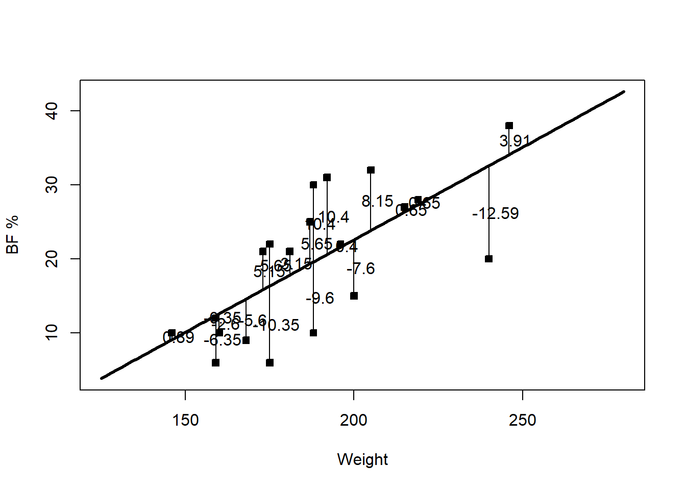
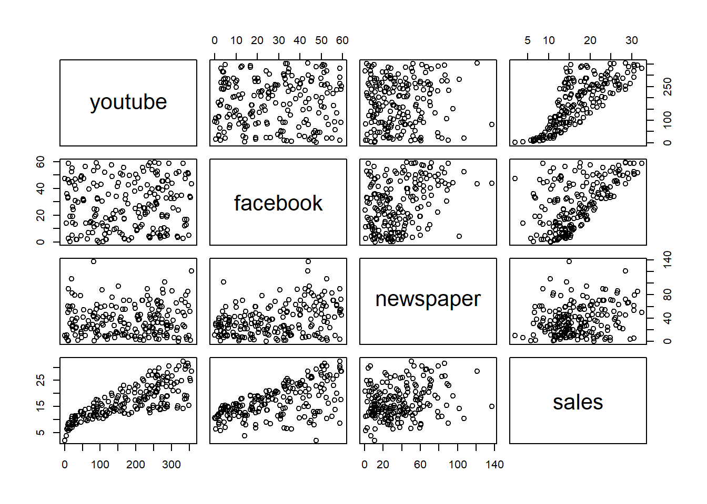

7 Least squares inference
We now know how to estimate \(\beta\): \(\hat\beta=(X^\top X)^{-1}X^\top Y\), and we can predict a new response at covariate value \(x\) with \(\hat y_{new}=x^\top\hat\beta\). But estimation alone doesn’t tell us how much to trust that estimate. How good is \(\hat y_{new}\) as a prediction, on average? How will new observations scatter around the fitted line? How does \(\hat\beta\) vary around \(\beta\)? Is there real evidence that \(Y\) is related to \(X\) at all, or could what we observed be explained by sampling variation alone? Answering these requires studying the variation in our estimates and our data — this is the subject of this whole section.
7.1 Residuals and fitted values
We call \(\hat Y=X\hat\beta\) the fitted values — what the model estimates \(Y\) to be, given the observed \(X\). We call \(\hat\epsilon=Y-\hat Y\) the residual vector; its \(i^{\text{th}}\) entry \(\hat\epsilon_i\) is the \(i^{\text{th}}\) residual, the signed vertical distance from observation \(i\) to the fitted line/hyperplane. The sum of squared errors (SSE), also called the sum of squared residuals, is \(\hat\epsilon^\top\hat\epsilon=\sum_{i=1}^n\hat\epsilon_i^2\) — and by construction (since \(\hat\beta\) was chosen via least squares), this is the smallest possible value of \(\epsilon_0^\top\epsilon_0\) over all choices of \(\beta_0\).
Example 3.3 In Example 3.1, what is the residual of individual 3? How do we interpret it?
residuals = Y - X %*% beta_hat
residuals[3][1] -7.598565Individual 3’s body fat is about 7.6 percentage points lower than the fitted line predicts for their weight — a negative residual means the observed point sits below the fitted line.
curve(beta_hat[1] + beta_hat[2]*x, 125, 280, lwd = 3, xlab = "Weight", ylab = "BF %")
points(Weight, BodyFat, pch = 22, bg = 1)
# vertical segments from each point down to the line, labeled with its residual
We never observe the true errors \(\epsilon_i=Y_i-(\beta_0+\beta_1X_i)\), since we don’t know \(\beta_0,\beta_1\). Residuals \(\hat\epsilon_i=Y_i-(\hat\beta_0+\hat\beta_1X_i)\) are the closest thing we have — the true error using our estimated line instead of the true one. Everything from here on (checking model assumptions, estimating \(\sigma^2\), building test statistics) is built out of residuals, precisely because they’re the only proxy for the unobservable \(\epsilon_i\)’s that the data gives us.
7.2 Variation decomposition
The residuals describe one kind of variation in the response. We can also consider the response’s total variation: the sum of squares total (SST) is \[ SST=\sum_{i=1}^n(Y_i-\bar Y)^2=(Y-\bar Y1)^\top(Y-\bar Y1), \] i.e. \((n-1)\) times the ordinary sample variance of \(Y\). Remarkably, this decomposes as \[ SST=(Y-\bar Y1)^\top(Y-\bar Y1)=\underbrace{(Y-\hat Y)^\top(Y-\hat Y)}_{SSE}+\underbrace{(\hat Y-\bar Y)^\top(\hat Y-\bar Y)}_{SSModel}, \] so \(SST=SSE+SSModel\) (SSModel is also written \(SSM\) or \(SSRegression\); SSE sometimes \(SSwithin\)). \(SSModel\) measures variation in \(Y\) explained by \(X\) via the fitted model; \(SSE\) measures variation left unexplained.
The first column of \(X\) is \(1_n\), so setting \(\hat\beta_*=(\bar Y,0,\ldots,0)^\top\) makes \(X\hat\beta_*=\bar Y1\) — the “flat line at \(\bar Y\)” model, whose residuals are exactly \(Y-\bar Y1\), with sum of squares \(SST\). Since the actual least squares \(\hat\beta\) was chosen specifically to minimize the sum of squared residuals over all choices of coefficients — including \(\hat\beta_*\) — the true SSE can never exceed \(SST\). In other words: however good or bad our fitted line is, it can never fit the data worse than a flat line at the average, because least squares would never have chosen it if it did.
Each term in the decomposition has associated degrees of freedom: \(dfT=n-1\), \(dfM=(\#\text{ non-zero }\beta)-1\), \(dfE=n-(\#\text{ non-zero }\beta)\). Since \(SSE\) is the variation unexplained by the model, it’s tied to the error variance \(\sigma^2\); we estimate \(\sigma^2\) by \[\hat\sigma^2=MSE=\frac{SSE}{dfE}.\]
The null model \(Y|X=\beta_0+\epsilon\) (all slopes 0 — \(Y\) doesn’t depend on \(X\)) only estimates a mean, so \(df=n-1\), and \(MSE\) under the null model reduces to \((n-1)^{-1}SST\) — exactly the usual sample variance of \(Y\). This is intuitive: with no covariates to explain any of the variation, our best estimate of \(\sigma^2\) is just how much \(Y\) varies on its own.
All of this is usually summarized in an ANOVA (“analysis of variance”) table:
| Source | SS | df | MS |
|---|---|---|---|
| Model | \(SSM\) | \(dfM\) | \(MSModel=SSM/dfM\) |
| Residual | \(SSE\) | \(dfE\) | \(MSE=SSE/dfE\) |
| Total | \(SST\) | \(dfT\) |
Being able to interpret these quantities (and follow the derivation) matters far more than memorizing the formulas — software computes them for us in practice.
7.3 Coefficients of determination
A good model explains a large share of the response’s variation: \(SSModel\) should be close to \(SST\) (equivalently, \(SSE\) close to 0). The coefficient of determination \[R^2=\frac{SSModel}{SST}\] is the proportion of variation in \(Y\) explained by the model, with \(0\leq R^2\leq1\) — and unlike the raw sum-of-squares terms, \(R^2\) doesn’t change if you rescale the data. Larger \(R^2\) generally means a better-fitting model, though how large is “good” is subjective and field-dependent.
Adding any covariate to a model — even a useless, unrelated one — can never decrease \(R^2\); it can only increase it or leave it unchanged. So raw \(R^2\) alone can’t tell you whether a new covariate is actually useful. The fix is the adjusted coefficient of determination, \[\bar R^2=1-(1-R^2)\frac{n-1}{n-p},\] which explicitly penalizes adding covariates (through the \(n-p\) term) — it only increases if a new covariate improves the fit by more than we’d expect from chance alone. Use \(\bar R^2\), not \(R^2\), when comparing models with different numbers of covariates.
7.4 The overall \(F\) test
\(R^2\) describes fit, but doesn’t formally test whether the covariates explain \(Y\) at all, versus what we see being purely due to sampling variation. Write \(\beta=(\beta_1,\ldots,\beta_p)^\top\) (using \(\beta_1\) for the intercept here) and let \(\tilde\beta=(\beta_2,\ldots,\beta_p)^\top\) be the coefficients excluding the intercept. We test \[H_0:\tilde\beta=0\qquad\text{vs}\qquad H_1:\tilde\beta\neq0.\]
This test requires the normality assumption \(\epsilon_i\sim\mathcal{N}(0,\sigma^2)\) — the normal MLR — even though least squares estimation itself does not. Under the normal MLR, one can show \(SSM/\sigma^2\sim\chi^2_{dfM}\), \(SSE/\sigma^2\sim\chi^2_{dfE}\), and \(SSM\perp SSE\). Recalling from Theorem 2.4 that a ratio of two independent, rescaled \(\chi^2\)’s follows an \(F\) distribution, the observed test statistic \[F_{obs}=\frac{MSModel}{MSE}\sim F_{dfM,dfE}\] under \(H_0\), with p-value \(\Pr(W>F_{obs})\) for \(W\sim F_{dfM,dfE}\).
\(MSModel\) measures how much variation the covariates explain, per degree of freedom spent; \(MSE\) measures how much variation is left unexplained, per degree of freedom remaining. If the covariates genuinely explain nothing (\(H_0\) true), both quantities are just independent estimates of the same noise level \(\sigma^2\), so their ratio should be close to 1. If the covariates really do explain \(Y\), \(MSModel\) inflates relative to \(MSE\), and \(F_{obs}\) gets pushed well above 1 — which is exactly what a large \(F_{obs}\) (and a small p-value) is evidence of.
The complete ANOVA table adds \(F\) and p-value columns to the Model row:
| Source | SS | df | MS | F | p-value |
|---|---|---|---|---|---|
| Model | \(SSM\) | \(dfM\) | \(MSModel\) | \(F=MSModel/MSE\) | \(\Pr(W>F_{obs})\) |
| Residual | \(SSE\) | \(dfE\) | \(MSE\) | ||
| Total | \(SST\) | \(dfT\) |
Example 3.4 In Example 3.1, compute the coefficients of determination, the ANOVA table, and test whether the model is significant overall.
summary(model) # F test results are in the last lineResidual standard error: 7.049 on 18 degrees of freedom
Multiple R-squared: 0.4853, Adjusted R-squared: 0.4567
F-statistic: 16.97 on 1 and 18 DF, p-value: 0.0006434null_model = lm(BodyFat ~ 1, data = df) # intercept-only model
anova(null_model, model)Analysis of Variance Table
Model 1: BodyFat ~ 1
Model 2: BodyFat ~ Weight
Res.Df RSS Df Sum of Sq F Pr(>F)
1 19 1737.75
2 18 894.42 1 843.33 16.972 0.0006434 ***Weight explains about 48.5% of the variation in body fat percentage (\(R^2=0.4853\)), or 45.7% after adjusting for the number of covariates (\(\bar R^2=0.4567\) — here identical in spirit to \(R^2\) since there’s only one covariate, but they’d diverge more with additional covariates). The \(F\) test gives \(F_{obs}=16.97\) on \((1,18)\) degrees of freedom with p-value \(0.0006\), strong evidence against \(H_0:\beta_1=0\) — weight really does help explain body fat percentage, well beyond what sampling variation alone would produce.
n = nrow(df); p = 2
SST = t(Y - mean(Y)) %*% (Y - mean(Y))
Yhat = X %*% beta_hat
SSE = t(Y - Yhat) %*% (Y - Yhat)
SSM = SST - SSE
dfm = p - 1; dfe = n - p
MSM = SSM/dfm; MSE = SSE/dfe
Fv = MSM/MSE
p.val = 1 - pf(Fv, dfm, dfe) SS df MS F p-value
Model 843.3252 1 843.32521 16.97164 0.0006434484
Error 894.4248 18 49.69027 NA NA
Total 1737.7500 19 NA NA NAMatches anova() exactly — lm() and anova() are just automating this same arithmetic.
7.5 Significance of one variable
The overall \(F\) test only tells us whether at least one covariate matters — not which ones. We now test individual coefficients, \(H_0:\beta_j=\beta_j^0\) vs. \(H_1:\beta_j\neq\beta_j^0\) (most often \(\beta_j^0=0\)).
Under the normal MLR, \(\epsilon\sim\mathcal{N}_n(0,\sigma^2I)\), so \(Y|X\sim\mathcal{N}_n(X\beta,\sigma^2I)\). Since \(\hat\beta=(X^\top X)^{-1}X^\top Y=AY\) for \(A=(X^\top X)^{-1}X^\top\), and linear transformations of multivariate Normals are themselves multivariate Normal (Unit_1_4):
Theorem 3.1 Under the normal linear regression model, \(\hat\beta\sim\mathcal{N}_p\left(\beta,(X^\top X)^{-1}\sigma^2\right)\).
Since \({\textrm{Var}}[\hat\beta_j]\) is the \((j,j)\) entry of \((X^\top X)^{-1}\sigma^2\) and \(\sigma^2\) is unknown, we estimate it with \(\widehat{{\textrm{Var}}}[\hat\beta_j]=(X^\top X)^{-1}_{j,j}MSE\). It can be shown \(\hat\beta\perp MSE\), so — exactly analogous to the one-sample \(t\) result from Theorem 2.5 — \[ \frac{\hat\beta_j-\beta_j}{\sqrt{\widehat{{\textrm{Var}}}[\hat\beta_j]}}\sim t_{dfE}. \]
The test proceeds exactly like any \(t\)-test: compute \(TS=\dfrac{\hat\beta_j-\beta_j^0}{\sqrt{\widehat{{\textrm{Var}}}[\hat\beta_j]}}\), which follows \(t_{dfE}\) under \(H_0\), and obtain the two-sided p-value \(2\Pr(|Z|>|TS|)\) for \(Z\sim t_{dfE}\). For one-sided alternatives \(H_1:\beta_j>\beta_j^0\), the p-value is \(\Pr(Z>TS)\); for \(H_1:\beta_j<\beta_j^0\), it’s \(\Pr(Z<TS)\).
Example In Example 3.1, test \(H_0:\beta_1=1/3\) vs. \(H_1:\beta_1\neq1/3\) (the weight coefficient), and separately \(H_0:\beta_1=0\) vs. \(H_1:\beta_1\neq0\).
hvar_beta = solve(t(X) %*% X) * MSE # estimated cov(beta_hat)
TS = (beta_hat[2] - 1/3) / sqrt(hvar_beta[2,2])
2 * (1 - pt(abs(TS), dfe)) # not-equal-to-1/3 p-value[1] 0.1857053TS = beta_hat[2] / sqrt(hvar_beta[2,2])
2 * (1 - pt(abs(TS), dfe)) # not-equal-to-0 p-value[1] 0.0006434484The second test matches the Weight row of summary(model) exactly — the t value and Pr(>|t|) columns are precisely this \(TS\) and p-value for \(H_0:\beta_j=0\). We have essentially no evidence that \(\beta_1=1/3\) (p-value \(0.186\)), but very strong evidence that \(\beta_1\neq0\) (p-value \(0.0006\)).
A \((1-\alpha)100\%\) confidence interval for \(\beta_j\) follows the same pattern as any \(t\)-based interval: \[\hat\beta_j\pm t_{dfE,\alpha/2}\sqrt{\widehat{{\textrm{Var}}}[\hat\beta_j]}.\]
Example 3.5 Compute 95% and 99% confidence intervals for the weight coefficient.
confint(model, level = 0.95) 2.5 % 97.5 %
(Intercept) -51.6365090 -3.1160157
Weight 0.1224448 0.3773035confint(model, level = 0.99) 0.5 % 99.5 %
(Intercept) -60.61484736 5.8623227
Weight 0.07528522 0.4244631The 99% interval is wider than the 95% interval — higher confidence requires casting a wider net, since \(t_{dfE,0.005}>t_{dfE,0.025}\).
It’s the interval, not the parameter, that’s random. If we repeated the study many times, each sample would produce a different interval, and \((1-\alpha)100\%\) of those intervals would contain the fixed, true \(\beta_j\) — not “there’s a 95% chance \(\beta_j\) is in this particular interval,” since \(\beta_j\) isn’t random at all. Given our one observed interval \((0.12,0.38)\), we say we’re “95% confident” \(\beta_1\) lies in it — a statement about the procedure’s long-run reliability, not a probability statement about this specific interval.
7.6 Inference for the mean response and prediction intervals
Given covariates \(x\), the theoretical mean response is \(x^\top\beta\), estimated by \(x^\top\hat\beta\). We have \[{\textrm{E}}\left[x^\top\hat\beta\right]=x^\top\beta,\qquad {\textrm{Var}}\left[x^\top\hat\beta\right]=x^\top(X^\top X)^{-1}x\,\sigma^2,\] estimated by \(\widehat{{\textrm{Var}}}[x^\top\hat\beta]=x^\top(X^\top X)^{-1}x\,MSE\).
Exercise 3.13 Under the normal MLR, show \(x^\top\hat\beta\) is Normal with this mean and variance, and that \(\dfrac{x^\top\hat\beta-x^\top\beta}{\sqrt{\widehat{{\textrm{Var}}}[x^\top\hat\beta]}}\sim t_{dfE}\).
A \((1-\alpha)100\%\) confidence interval for the mean response \({\textrm{E}}[Y|X=x]\) is \[x^\top\hat\beta\pm t_{dfE,\alpha/2}\sqrt{\widehat{{\textrm{Var}}}[x^\top\hat\beta]}.\] Testing \(H_0:{\textrm{E}}[Y|X=x]=\mu_0\) works exactly like the single-coefficient test above, using \(TS(x,\mu_0)=\dfrac{x^\top\hat\beta-\mu_0}{\sqrt{\widehat{{\textrm{Var}}}[x^\top\hat\beta]}}\sim t_{dfE}\) under \(H_0\).
We might instead want to predict a new individual’s response \(Y_{new}|Z=z=z^\top\beta+\epsilon_{new}\) — a different question from estimating the population average. Our prediction is \(\tilde Y_{new}=z^\top\hat\beta+\epsilon_{new}\) (modeling the future error too), with variance \[{\textrm{Var}}\left[\tilde Y_{new}|Z=z\right]={\textrm{Var}}[z^\top\hat\beta]+{\textrm{Var}}[\epsilon_{new}]=z^\top(X^\top X)^{-1}z\,\sigma^2+\sigma^2,\] estimated by \(z^\top(X^\top X)^{-1}z\,MSE+MSE\).
Estimating the mean response only has to account for our uncertainty about \(\beta\) (through \(x^\top(X^\top X)^{-1}x\,\sigma^2\)). Predicting one new individual’s response has to account for that same uncertainty about \(\beta\), plus the individual’s own random error \(\epsilon_{new}\) (the extra \(+\sigma^2\)) — an ordinary individual never sits exactly on the population mean line, even if we knew \(\beta\) perfectly. That extra source of variability is why the prediction interval always strictly contains the confidence interval for the mean response at the same \(x\).
Exercise 3.14 Under the normal MLR, show \(\tilde Y_{new}|Z=z\) is Normal, and derive the \(t_{dfE}\) pivot for it.
The \((1-\alpha)100\%\) prediction interval for \(Y_{new}\) is \[z^\top\hat\beta\pm t_{dfE,\alpha/2}\sqrt{z^\top(X^\top X)^{-1}z\,MSE+MSE}.\]
A confidence interval for the mean response is a statement about the long-run reliability of the interval-producing procedure, applied to the population mean (a fixed constant). A prediction interval \((a,b)\) instead says: \(\Pr(Y_{new}\in(a,b))=(1-\alpha)100\%\) — a genuine probability statement about a still-random future observation \(Y_{new}\), not about a procedure applied to a fixed parameter. These are conceptually different claims, even though both intervals are built the same algebraic way.
Example 3.6 For someone weighing 165 lbs, find a 95% confidence interval for mean body fat and a 95% prediction interval for one individual’s body fat.
z = data.frame(Weight = 165)
predict(model, newdata = z, interval = 'confidence') fit lwr upr
1 13.85297 9.379675 18.32627predict(model, newdata = z, interval = 'prediction') fit lwr upr
1 13.85297 -1.617547 29.32349We’re 95% confident the average body fat percentage among 165-lb people is between 9.38% and 18.33%. There’s a 95% probability that one specific 165-lb person’s body fat falls between \(-1.62\%\) and \(29.32\%\) — a much wider range, as expected.
7.7 Partial testing: is a subset of covariates useful?
We sometimes want to test whether a whole subset of covariates adds anything, beyond the others already in the model: \[H_0:(\beta_1,\ldots,\beta_k)=0\qquad\text{vs}\qquad H_1:(\beta_1,\ldots,\beta_k)\neq0,\] comparing a reduced model (the other covariates only) against the complete/full model (everything). This generalizes the overall \(F\) test, which is the special case where the reduced model is the null (intercept-only) model.
The key insight: \(SST\) never depends on which covariates are in the model — it’s a property of \(Y\) alone. So the drop in unexplained variation from adding the extra covariates is \[SSdrop=SSE_R-SSE_C,\qquad dfdrop=dfE_R-dfE_C,\qquad MSdrop=SSdrop/dfdrop,\] where subscripts \(R\)/\(C\) denote the reduced/complete model. The partial \(F\) test statistic is \[TS=\frac{MSdrop}{MSE_C}\sim F_{dfdrop,\,dfE_C}\quad\text{under }H_0,\] with p-value \(\Pr(F_{dfdrop,dfE_C}\geq TS)\).
Taking \(k=1\) (dropping a single covariate) reduces this exactly to the single-coefficient \(t\)-test from earlier in this section — the partial \(F\) test is a genuine generalization, not a separate idea.
We can also define the partial coefficient of determination, \[R^2(X_1,\ldots,X_{k}\mid X_{k+1},\ldots,X_p)=\frac{SSE_R-SSE_C}{SSE_R}=\frac{SSdrop}{SSE_R},\] the extra proportion of the remaining (reduced-model) variation explained by adding \(X_1,\ldots,X_k\) to a model that already has \(X_{k+1},\ldots,X_p\). Its square root is the partial correlation coefficient.
Example 3.7 A researcher wants to know whether online advertising (YouTube, Facebook) adds anything to a model that already includes newspaper advertising, using the marketing dataset (sales vs. youtube, facebook, newspaper).
data("marketing", package = "datarium")
plot(marketing)
full_model = lm(sales ~ youtube + facebook + newspaper, data = marketing)
model_red = lm(sales ~ newspaper, data = marketing)
anova(model_red, full_model)Analysis of Variance Table
Model 1: sales ~ newspaper
Model 2: sales ~ youtube + facebook + newspaper
Res.Df RSS Df Sum of Sq F Pr(>F)
1 198 7394.1
2 196 801.8 2 6592.3 805.71 < 2.2e-16 ***SSdrop = 7394.119 - 801.8284 # SSE_R - SSE_C
partial_R2 = SSdrop / 7394.119
partial_R2[1] 0.8915586Adding YouTube and Facebook spending drops unexplained variation from 7394.1 to 801.8 — an enormous, highly significant improvement (\(F=805.71\), p-value \(\approx0\)). The partial \(R^2\) says these two variables explain about 89.2% of whatever variation newspaper advertising alone left unexplained. Online advertising clearly matters, well beyond what newspaper spending alone captures.
- \(\hat Y=X\hat\beta\) are fitted values; \(\hat\epsilon=Y-\hat Y\) are residuals — the only observable proxy for the unobservable true errors \(\epsilon\).
- \(SST=SSM+SSE\) splits total variation in \(Y\) into variation explained by the model and variation left over; \(R^2=SSM/SST\) is the proportion explained, and \(\bar R^2\) penalizes adding covariates.
- The overall \(F\) test (\(H_0:\) all slopes are 0) and the single-coefficient \(t\)-test (\(H_0:\beta_j=\beta_j^0\)) both require the normal MLR, and both compare estimated variation to \(MSE\).
- Confidence intervals for the mean response quantify uncertainty in \(x^\top\beta\); prediction intervals are wider because they also account for one new individual’s own random error \(\epsilon_{new}\).
- The partial \(F\) test generalizes the single-coefficient \(t\)-test to a whole subset of covariates at once, by comparing \(SSE\) between a reduced and a complete model; the partial \(R^2\) measures the extra variation explained.
7.8 Check Your Understanding
Before checking your answers, work through this on your own using the hours-studied/exam-score data from 3.2: compute and interpret \(R^2\), \(\bar R^2\), and the ANOVA table; perform the overall \(F\) test (state hypotheses, test statistic, p-value, and conclusion); and give a 95% confidence interval for the mean exam score of a student who studies 10 hours, plus a 95% prediction interval for one such student.
Question 1. What’s the difference between a fitted value \(\hat Y_i\) and the true (unobserved) mean response \({\textrm{E}}[Y_i|X_i]\)?
Show answer
\({\textrm{E}}[Y_i|X_i]=X_i^\top\beta\) uses the true, unknown population coefficients \(\beta\); the fitted value \(\hat Y_i=X_i^\top\hat\beta\) uses our estimated coefficients \(\hat\beta\). \(\hat Y_i\) is our best estimate of the (unobservable) true mean response.
Question 2. Why does adding a covariate to a model never decrease \(R^2\), and what does \(\bar R^2\) fix about this?
Show answer
Least squares chooses the fit that minimizes \(SSE\) over all available coefficients; adding a covariate only ever gives the optimizer more freedom, so \(SSE\) can only go down (or stay the same), which means \(SSModel=SST-SSE\) can only go up — hence \(R^2\) never decreases, even if the new covariate is pure noise. \(\bar R^2\) explicitly penalizes the number of covariates \(p\), so it only increases when a new covariate improves fit by more than chance alone would predict.
Question 3. What null and alternative hypotheses does the overall \(F\) test evaluate, and what extra assumption does it require beyond ordinary least squares estimation?
Show answer
\(H_0:\tilde\beta=0\) (all slope coefficients, excluding the intercept, are zero) versus \(H_1:\tilde\beta\neq0\) (at least one is nonzero). It requires the normal MLR — errors Normally distributed — even though least squares estimation itself needs no such assumption; normality is only needed to know the sampling distribution of the test statistic.
Question 4. True or False: a 95% prediction interval for a new observation is always narrower than a 95% confidence interval for the mean response at the same covariate value.
Show answer
False — it’s the opposite. The prediction interval’s variance includes both the uncertainty in estimating \(\beta\) and the individual’s own random error \(\sigma^2\), while the confidence interval for the mean only includes the first source. So the prediction interval is always at least as wide, and generally strictly wider.
Question 5. In the partial \(F\) test, what do \(SSdrop\) and \(dfdrop\) represent, and what happens to this test when \(k=1\) (only one covariate is dropped)?
Show answer
\(SSdrop=SSE_R-SSE_C\) is the reduction in unexplained variation gained by adding the extra covariates (equivalently, the explained variation lost by removing them); \(dfdrop\) is the number of covariates dropped. When \(k=1\), the partial \(F\) test reduces exactly to the ordinary single-coefficient \(t\)-test for that one covariate.
Question 6. In the marketing example, the partial \(R^2\) for adding YouTube and Facebook to a newspaper-only model was about 0.89. What does this number mean, in words?
Show answer
Of whatever variation in sales was still unexplained by newspaper advertising alone, about 89% of it is explained once YouTube and Facebook spending are added to the model. It is not the proportion of total variation in sales explained by these two variables on their own — it’s specifically the extra, incremental proportion explained on top of what newspaper spending already captured.